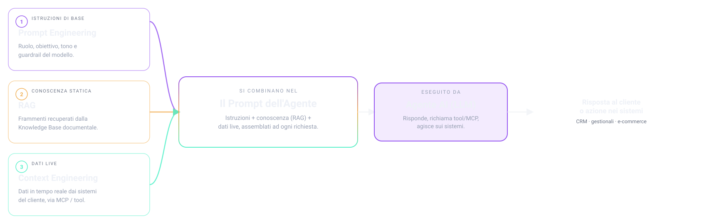

Progettare e sviluppare sistemi agentici conversazionali per applicazioni di Customer Experience in ambito enterprise.
Lucilla Plenitude
Tocca il microfono per ascoltare
0:00
Un AI Agent è un assistente conversazionale autonomo che comprende la richiesta dell'utente in linguaggio naturale, recupera il contesto dai sistemi del cliente (via tool/MCP e API), esegue azioni e genera la risposta — su qualunque canale, con guardrail e valutazione della qualità.
Ha cambiato la capacità dell'AI di comunicare con i sistemi informatici.

Perché MCP: un protocollo standard per connettere l'AI ai sistemi del cliente. Un'integrazione invece di tante custom, dati vivi al momento giusto, chiamata autonoma dei tool, riuso tra agenti e scope controllato. Meno codice, più governance, integrazioni più rapide.
Quando un sistema non ha un server MCP nativo, si genera la specifica OpenAPI/Swagger dalle API REST esistenti del cliente e la si incolla in piattaforma, che la trasforma in tool richiamabile (stesso comportamento di un MCP).
Orchestrazione conversazionale, RAG e architetture multi-agente.
Text-to-speech per il voicebot Plenitude «Lucilla».
Prototipazione rapida di agenti (OpenAI).
Sviluppo e hosting rapido dei prototipi.
Test e validazione delle API e degli endpoint Swagger.
Parsing e conversione documenti — Excel → Markdown e JSON per la KB Lenovo.
88% delle aziende usa AI, ma solo 1/3 la scala enterprise-wide — McKinsey, 2025
È già pronta per il primo livello di Customer Experience: un agente può dialogare, guidare e assistere il cliente finale in autonomia.
Non è ancora matura, proprio per le considerazioni viste prima: vincoli fissi di governance e security, velocità con cui l'AI evolve e resistenza organizzativa al cambiamento.
Pierluigi Camozzi — Tesi di Laurea Triennale
Università degli Studi di Ferrara